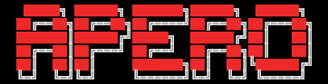

Home
Install
Github
PDF

A PipelinE to Reduce Observations
Navigation
index
next
|
previous
|
APERO 0.6.010 documentation
»
Previous topic
The Tools
Next topic
Adding a new constant
This Page
Show Source
Quick search
Developer how to guide
¶
The methodology and how things work in APERO.
Contents:
Adding a new constant
Adding a new keyword
Adding a new recipe
Adding a new filetype
Adding a new plot
Back to top
Navigation
index
next
|
previous
|
APERO 0.6.010 documentation
»